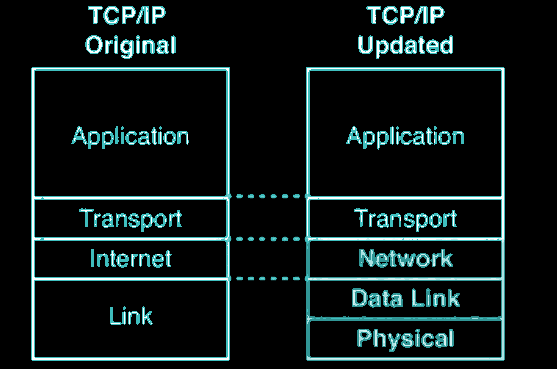
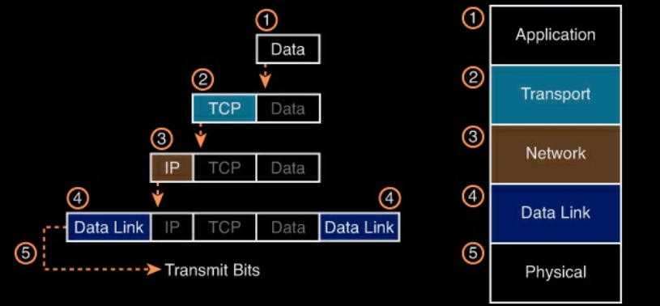
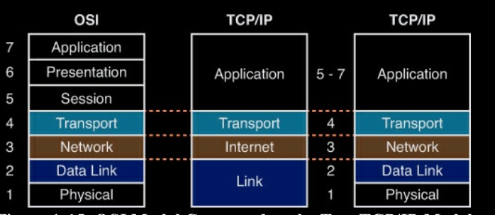

The TCP/IP and OSI Networking Models
Operation of IP Data Networks
TCP/IP Networking Model
- Networking Model is also called the networking architecure or sometimes networking blueprint
- These Models use the set of Logical rules called protocols
- TCP/IP left hand side TCP/IP protocol stack is defined by RFC 1122 documets

TCP/IP Application Layer
- Provides the User Interface
- It defines the services that applications need
- Defines whether the partner is ready or not to accept the data
- Define whether the Communication Medium is busy or not.
Protocols runs at the Applications layers are
HTTP, DHCP, DNS, HTTPS, FTP, SMTP, TELNET, SSH and many more.
TCP/IP Transport Layer
- Define the two protocols
- TCP: Transmission Control Protocols
- UDP: User Datagram Protocol
- TCP is responisble for the Connection oriented Communication, while UDP is responsible for the Connection less Communication.
- Transport layer Provides the services to the Application layer i.e. n layer provide services to n+1 layer
TCP/IP Network Layer
- It is responsible for addressing and routing of the packets
- IP is the protocol defined as the Network Layer.
- Network Layer is responsible for the Internetwork Communication Packet Switching and Best route selectio to the destination network.
- TCP/IP protocols defines the Two version of IP
* IPv4: Majority in the world still use IPv4
* IPv6: In future will replace IPv4
- IPv4 address are represented in DDN called Dotted Decimal Notation example 1.1.1.1
- In network layer term host refers to any device, regardless of power and size, that has an IP address and connects to any TCP/IP network
TCP/IP Network Access Layer
- This layer is also called Link Layer i.e. Physical Layer + Data Link Layer
- The term link refers to the physical connections.
- This layer defined the various protocols like,
* WAN Standards (PPP, FrameRelay, Ethernet, ATM) and many more.
Data Encapsulation Process in TCP/IP Protocol Stack

- Segment: User data + Transport Layer Header
- Packet: Segment + IP Header
- Frame: Packet + Data Link Layer Header
- Physical layer define the data into bits, so that bits can be transmit from the transmission medium in the form of Voltage and currents.
OSI Model
- Open system Interconnection model, developed by ISO(International Organization for Standardization)
- Have Seven Layers. and each layers defines a set of Unique Functions.

OSI Layer Description
Application Layer:
- Provides User Interface
- Find the Communicating partner, whether it is busy or not.
- Check whether the communication medium is busy or not.
Presentation Layer
- Define Data formats like (ASCII text EBCDIC text, binary BCD, JPEG)
- Data Compression and decoding is funcition.
Session Layer
- Controls the Dialog between the Application
- Define the Mode of Communication (Full Duplex, HalfDuplex,and Simple)
Transport Layer
- Define the Process to Process Communication between the Devices.
- Error Correction Methods are defined at this layer.
Network Layer
- Define Logical IP addressing.
- Node to Node communication.
- Packet Forwarding, best route Selection and internetwork Communication.
- Protocols define at this Layer is IP.
The easy way to remember OSI 7 layers is EVERY PEOPLE SEEMS TO NEED DATA PROCESSING